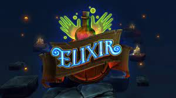
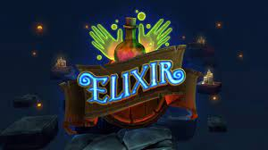

Made by Matthew Jennings Made at John Ferneley Collage

facebook:~~~~~~~ instagram:~~~~~~~~ email:~~~~~~~~~~

 


love this game its gotta be one of my favorites. The sheer ability to easily cut through random boxes while listening to some amazing music is truly amazing. It's a different experience that kept me going for hours at a time. I have owned the game for multiple years now and never have I thought to myself that buying the game was a bad idea, heck I even bought a new headset multiple times to get a better and better experience every time I played. I went from PSVR to Quest to Rift S to now CV1, I got all of these for Beat Saber and I personally don't regret it one bit and never have. If you have the chance, I would personally suggest you get this game it is one of my favorite games ever and I could get on at any time of day and feel great. |
I've played this game for around 2-3 years now, it has an endless number of things to do. It's basically everything in one pvp, sandbox, adventure, ect. But like any game there just has its problems. like the report system is wack, if a group of 5 people don't like you for no good reason they can report and get an account you spent alot of money on an ever lasting scar, and it sucks because I've been banned for no reason. Besides the flaws the good out weighs bad |
While it has to be said ‘Elixir’ is way too short for its own good while it is going it is a lot of fun, especially when you play the experience with hand tracking rather than the controllers. You play the role of a witches apprentice and have to perform various spells in the form of hand-motions. It looks good and is oddly immersive. But it won’t last you much more than 30 mins tops and that is if you mess about a lot and some people will argue it is hardly worth the download. I am not one of those people, but yes I do wish it had more content, but it is free and I say it’s well worth a look. |
Made by Matthew Jennings Made at John Ferneley Collage
facebook:~~~~~~~ instagram:~~~~~~~~ email:~~~~~~~~~~